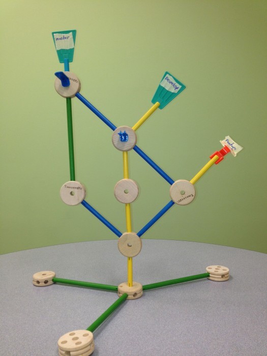

Baby, Don't Fear The Rebase
Why Is this so Hard?

- Commits as a story
- A 2-trick pony
- Rebase FTW!
- Scenarios
"Complete commits" vs "WIP commits"
What am I doing with my life?
git status
git diff
The index is actually awesome
git add -p
Just get this thing out of my way
git stash
Great commits
who cares?
Code ownership
Finding stuff
What is going on here?

The server does not matter
It's all just pointers man
References Make Commits Reachable
Directed Acyclic Graph

Rebase rules
REBASE on branches
MERGE on master
Why rebase?
-
Linear history
-
Easier to quit
-
Easier to undo
-
Merging is Viral
-
git-bisect
When to merge
- NEVER
- Just kidding-> AFTER rebase
- Maybe* -> (Long lived branches)
I'm afraid I'm about to mess things up
### Autosquash
```
git commit --fixup bbb2222
git commit --squash bbb2222
git rebase -i --autosquash master
```
```
git config --global rebase.autosquash true
```
```
git commit --fixup :/second
```
## Don't make me repeat myself
```
git rerere
```